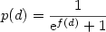
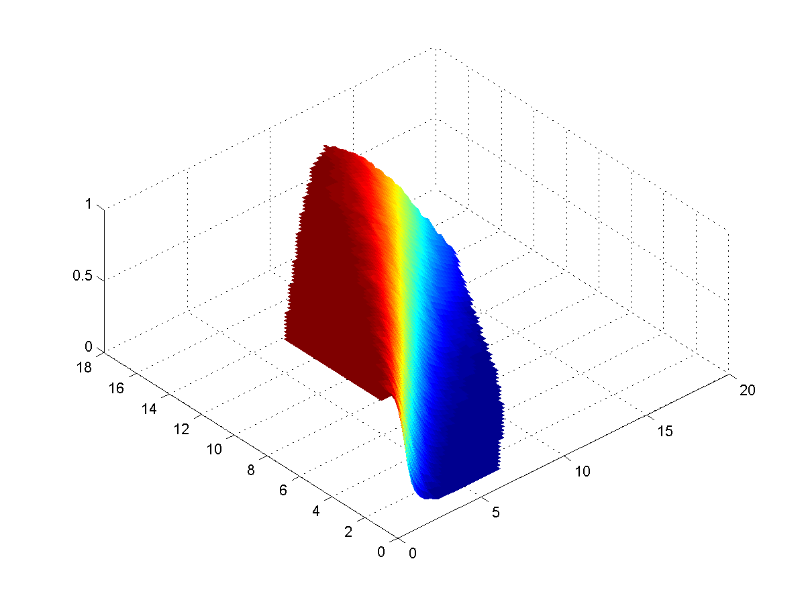
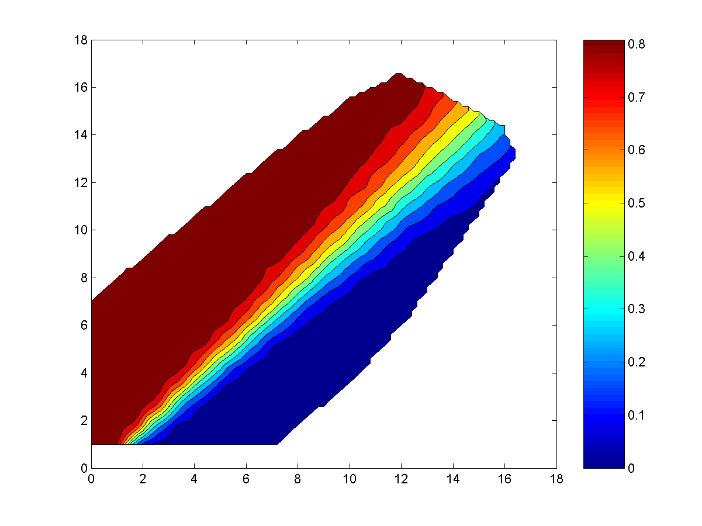
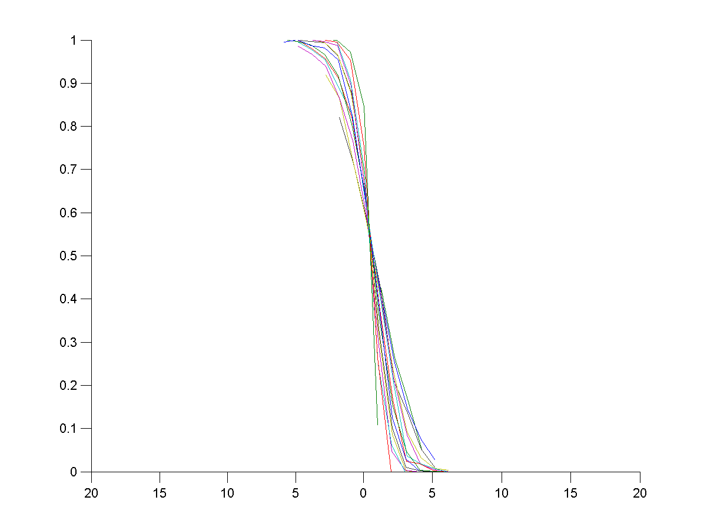
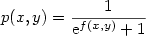

After rolling out some 300 bearoff boards (no checker on a point greater than 6), the distribution of the wining probability was plotted against the difference between the estimated needed dice throws and played moves to finish the board.
The resulting distribution suggested a rather simple functional relationship between the difference in needed rounds and the winning probability. Because of the apparant sigmoid nature of this (empirically gained) distribution, an approximation was assumed to be of the form , d denoting the difference in the needed throws.
Linear regression for a funtion f(d) = ad+b resulted in the shown graph, which is already a good approximation. The mean square error of a random sample of another 1000 positions was 0.0024.
The values: a = 1.3, b = -0.65
As it is player 1's move, p(0) =c .657 > .5 even at equal estimated rounds, player12 is more likely to win the game than player 2.
If the positions taken into consideration are not limited to bear off boards, but to "separated" (no more hits possible) boards, the relationship above does no longer hold so well.
The problem is that with growing distance to the end of the game the the distribution of winning is less "sharp" over the difference of estimated rounds, more tending towards ½.
Put into diagrams, the probability is as follows:



It is obvious that in general the function is still sigmoid but depends on two variables (player 1's moves to finish and player 2's moves to finish): 
Linear regression for a funtion f(x,y) with the following functions: x, y, xy, x², y², x-¹, y-¹ lead finally to the resulting approximation of
Theoretically it should be something with 1/(x-y), but numerically this was not appliable. The mean square error is 0.0025
{kind=link}
{kind=link}
{kind=link}
{kind=link}